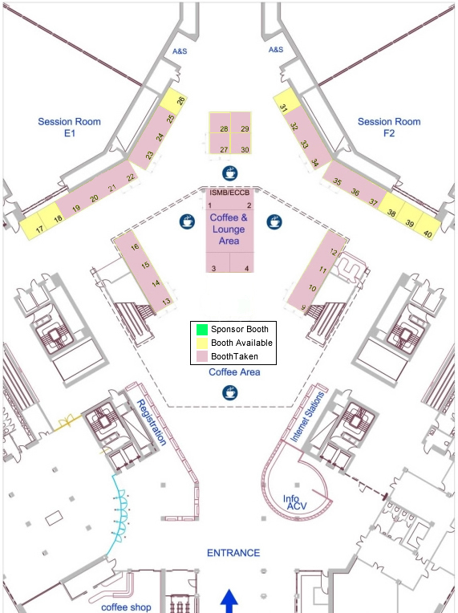

|
Floor Plan

Exhibitor Booths
International Society for Computational Biology (ISCB)
www.iscb.org
The International Society for Computational Biology (ISCB, www.iscb.org) organizes and hosts the Annual International Conference on Intelligent Systems for Molecular Biology (ISMB), now in its 19th year and presented this year as a joint meeting with the 10th European Conference on Computational Biology (ECCB). The mission of ISCB is to advance the scientific understanding of living systems through computation. On behalf of its global membership, ISCB communicates the significance of our science to the larger scientific community, governments, and the public at large, thus impacting government and scientific policies.
Primary activities include providing high quality publications and meetings, and distributing valuable information about training, education, employment and relevant news from related fields. ISCB membership offers many benefits including reduced conference registration fees to several high impact conferences, most prominently ISMB, ECCB, PSB and RECOMB. ISCB proudly offers Bioinformatics and the open-accessPLoS Computational Biology as its official journals, and publishes the ISMB conference proceedings in partnership with Oxford University Press in open-access format as part of a regular issue of Bioinformatics. In addition, ISCB members enjoy exclusive subscription discounts on a selection of journals related to computational biology and bioinformatics.
ECCB 2012
eccb12.org
ECCB12 is the key European computational biology event in 2012 uniting scientists working in a broad range of disciplines, including bioinformatics, computational biology, biology, medicine, and systems biology. Participation at ECCB12 will be the prime opportunity to learn about cutting-edge research in computational biology and bioinformatics and to network with other members of our community.
Come and visit us at the booth to learn more about ECCB12 , and win a weekend in Switzerland!
 Booth 3 Booth 3
Netherlands Bioinformatics Centre
www.nbic.nl
The Netherlands Bioinformatics Centre (NBIC) is a network organisation of collaborating academic and industrial researchers from various disciplines. Together, they have created a lively bioinformatics and e-bioscience community that performs internationally competitive bioinformatics research, offers expertise and support, develops novel tools and educates the next generations of bioinformaticians.
Booth 4
ISCB Student Council
www.iscbsc.org
ISCB Student Council (SC, www.iscbsc.org) is an international network of young researchers in the broader disciplines of the field of Computational Biology. SC provides opportunities for networking, career enhancement and skills development for the next generation of Computational Biology leaders. The SC Symposium (symposium.iscbsc.org) is organized as a part of the annual ISMB conference with student presentations, keynotes, panel discussions and a poster session. The SC Career Central booth is an endeavor to address the needs of recruiters and job seekers at ISMB. We will be providing an interactive job posting service where potential employees can sign up to meet employers (and vice-versa) during the conference. Come visit our friendly SC representatives at the booth for more information.
Booth 9
The European Bioinformatics Institute (EMBL-EBI)
www.ebi.ac.uk
The European Bioinformatics Institute (EMBL-EBI) is a unique resource which gathers and builds not only databases but ad hoc tools for searching/retrieving and interpreting bioinformatics data. Advances in Systems Biology call for a multidisciplinary platform from which to explore and extract information which EBI can provide.
Booth 10
ELIXIR
www.elixir-europe.org/page.php
The mission of ELIXIR is to construct and operate a sustainable infrastructure for biological information in Europe to support life science research and its translation to medicine and the environment, the bio-industries and society.
Booth 11
BioMed Central
www.biomedcentral.com
BioMed Central is the open access publisher committed to the free widespread dissemination of scientific research; publishing over 200 peer-reviewed, open access journals, including BMC Bioinformatics and BMC Systems Biology. Visit the BioMed Central stand to find out more about the journals and open access publishing.
Springer
www.springer.com / www.springerlink.com
Springer is one of the leading STM publishers. With more than 40.000 books currently available in the eBook collections our mission is to support your research work at the best.
Get hands-on experience with Springer’s multi-format publishing model: print – eBook – MyCopy edition for just €24.95. Browse highlights on electronic devices, online and in print.
Ensure maximum possible dissemination of your work. Springer supports you! Meet us at the booth to gain insights into all your advantages and benefits of publishing with us.
We look forward to talking with you!
Booth 13
Geneious
www.geneious.com
Revolutionary bioinformatics software platform eneious Pro and Geneious Enterprise Server that is both ultra-powerful and easy to use. Scientists, researchers and students are able to search, organize and analyze genomic and protein information via a single desktop program that provides publication ready images to enhance the impact of research.
Chapman & Hall/CRC - Taylor & Francis Group publishes books, journals and electronic databases. Check out the titles in our mathematical and computational biology series and key titles from our Garland Science list. Stop by the booth and pick up free journal samples. Take advantage of a special meeting discount of 20% off!
Omixon
www.omixon.com
Omixon provides highly accurate NGS analysis software and services. The Omixon Gapped SOLiD Alignment plug-in for the CLC bio workbench provides the most sensitive genomic variant analysis including small indels. It enables scientists to identify tandem SNPs, variants in homopolymers, GA repeats, palindromes, which most alignment and variant calling software have trouble with. Omixon also develops highly automated data analysis pipelines, for example for human exome analysis, which is available as a service or a consultancy.
BIOBASE
www.biobase-international.com
BIOBASE, a leading provider of biological databases and analysis tools, is a rising player in personal genomic and next generation sequencing applications. BIOBASE’s product portfolio includes Genome TraxTM , developed for identification of human genome variations of functional significance such as disease mutations and regulatory sites; the BIOBASE Knowledge LibraryTM (BKL), a resource for disease, drug, and model organism research; TRANSFAC® Professional, the industry standard for gene regulation research; and the Human Gene Mutation Database (HGMD®), the most comprehensive collection of inherited disease mutations.
Oxford University Press
www.oup.com
Oxford University Press is a department of the University of Oxford. It furthers the University's objective of excellence in research, scholarship, and education by publishing worldwide. In addition to publishing over 4,600 new books each year, Oxford University publishes well over 220 journals, two-thirds of which are published in collaboration with learned societies and other international organizations.
Illumina
www.illimina.com
Illumina is a leading developer, manufacturer, and marketer of life science tools and integrated systems for large-scale analysis of genetic variation and function. These systems are enabling studies that were not even imaginable just a few years ago, and moving us closer to the realization of personalized medicine.
CLC bio
www.clcbio.com
CLC bio is the world's leading bioinformatics solution provider. High-Troughput Sequencing is a major focus area and CLC bio delivers the first and only comprehensive cross-platform analysis solution, which can analyze and visualize genomic, transcriptomic, and epigenomic data from all major platforms.
Convey Computer Corporation
www.conveycomputer.com
Convey’s revolutionary hybrid-core computer delivers dramatically increased throughput for genomics and proteomics applications. The system integrates advanced architecture and compiler technology with commodity processors, accelerating sequence assembly and alignment while reducing energy usage and management costs. Furthermore, increased performance provides fundamental improvements in research quality by allowing previously impractical approaches.
Cambridge University Press
www.cambridge.org/knowledge
Cambridge University Press is the printing and publishing house of the University of Cambridge. Visit our stand and receive a 20% discount on all displayed titles.
Accelrys
www.accelrys.com
Accelrys develops and commercialises scientific informatics software and solutions that help accelerate science for clients in the Life Sciences, Energy, Chemicals, Aerospace, and Consumer Packaged Goods industries. Our solutions are used by biologists, chemists, materials scientists, IT and business professionals to aggregate, analyse, simulate, and visualise scientific data. Our scientifically aware platform and predictive science tools help clients conduct experiments in-silico, make informed decisions, and reduce times for product development.
MIT Press
mitpress.mit.edu
The MIT Press publishes a distinguished programme of scholarly books in computational molecular biology and related biological sciences. New titles in 2010 include Algorithms in Structural Molecular Biology by Bruce Donald and Learning & Inference in Computational Systems Biology edited by Neil D. Lawrence , Mark Girolami, Magnus Rattray and Guido Sanguinetti. New and backlist titles will be available at 30% discount to delegates during the conference.
We welcome the submission of proposals and manuscripts for consideration; our Acquisition Editor, Robert Prior, will be available during the conference to talk to you.
Contact Details:
Robert V. Prior, Executive Editor, The MIT Press, 55 Hayward Street, Cambridge, MA 02142, USA.
This e-mail address is being protected from spambots. You need JavaScript enabled to view it
For marketing and order queries please contact: The MIT Press,1 Duchess Street, London, W1W 6AN
This e-mail address is being protected from spambots. You need JavaScript enabled to view it
CEITEC
www.ceitec.eu
CEITEC – the Central European Institute of Technology is a project focused on the establishment of a European centre of excellence located in Brno, Czech Republic.
The centre will cover competitive research in the area of life sciences and advanced materials, i.e. nano- and microtechnologies, structural biology, genomics, proteomics, and medicine.
The Computational Biology Research Center
www.cbrc.jp/index.eng.html
Computational Biology Research Center (CBRC) belongs to National Institute of Advanced Industrial Science and Technology (AIST), which is the largest national research institute in Japan. CBRC has been conducting computational biology research and software/database development since 2001, and now over 100 researchers are working in CBRC.
SciEngines GmbH
www.SciEngines.com
SciEngines develops and markets application specific IT solutions based on FPGAs. The high performance computers COPACOBANA and RIVYERA, with configurations ranging from 100 to 5000+ PCs performance, offer a price-performance ratio that is usually 10x better than ordinary computers - at 1% electricity consumption. Implementation and custom-design services are available.
Biomax Informatics AG
www.biomax.com
Biomax provides computational solutions for better decision making and knowledge management in the life science industry. Our flexible and comprehensive solutions provide access to relevant knowledge at the right time and in the right context. Biomax helps customers generate value from proprietary and public resources by extracting the knowledge indispensable for efficient data exploration and interpretation. Biomax focuses on integrating information to enable a knowledge-based approach to develop innovative life science products.
PLoS Computational Biology
www.ploscompbiol.org
PLoS Computational Biology is an open-access, peer-reviewed journal published monthly by the Public Library of Science (PLoS) as an official journal of the International Society for Computational Biology (ISCB).
PLoS Computational Biology is run by an international Editorial Board, headed by the Editor-in-Chief, Philip E. Bourne (University of California, USA).
The Royal Society Publishing
royalsocietypublishing.org
The Royal Society publishes two journals at the interface of the biological and physical sciences:
Journal of the Royal Society Interface publishes research articles and reviews, while Interface Focus publishes topical themed issues.
Find out more about both journals at royalsocietypublishing.org or come and visit us at booth 34.
IMGT®, the international ImMunoGeneTics information system®
www.imgt.org
IMGT® is the global reference in immunogenetics and immunoinformatics, specialized in the immunoglobulins (IG) or antibodies, T cell receptors (TR), major histocompatibility complex (MHC) of human and other vertebrates, and in the immunoglobulin superfamily (IgSF), MHC superfamily (MhcSF) and related proteins of the immune system (RPI) of any species.
Spanish National Bioinformatics Institute
www.inab.org
The Spanish National Bioinformatics Institute (INB) is a technical platform of the Carlos III Health Institute that is active in research and education and it offers support for projects in genomics, proteomics and translational medicine in Spain. The INB is composed by a network of nine nodes and a Central Node.
Accelerated Technology Laboratories, Inc.
www.atlab.com
ATL is a laboratory informatics firm that is launching a new product called SeqNFind™. SeqNFind™ is a unique GPU based hardware/software cluster system that leverages a multi-processing environment to do fast, accurate and complete short read genomic sequence alignments using a tool-set including a modified Smith-Waterman, with GPUs to examine short read local alignments.
top
|